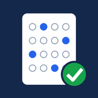

Đang mở phần mềm thi trắc nghiệm…
Có thể do mạng chậm, Google đang lỗi, hoặc trình duyệt chặn khung nhúng. Bấm "Thử lại", hoặc mở trực tiếp ứng dụng.
Mở trực tiếp vẫn dùng được bình thường, chỉ là có thanh thông báo của Google ở trên cùng.
Mở file index.html trên GitHub, sửa dòng APP_URL thành đường link
…/exec của Web App thi trắc nghiệm rồi bấm Commit.